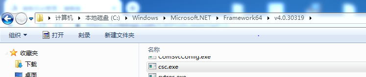
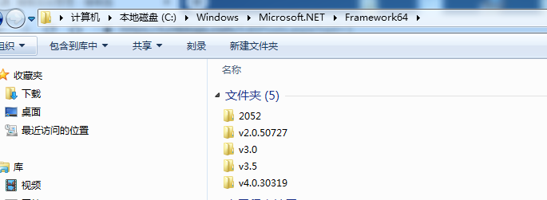
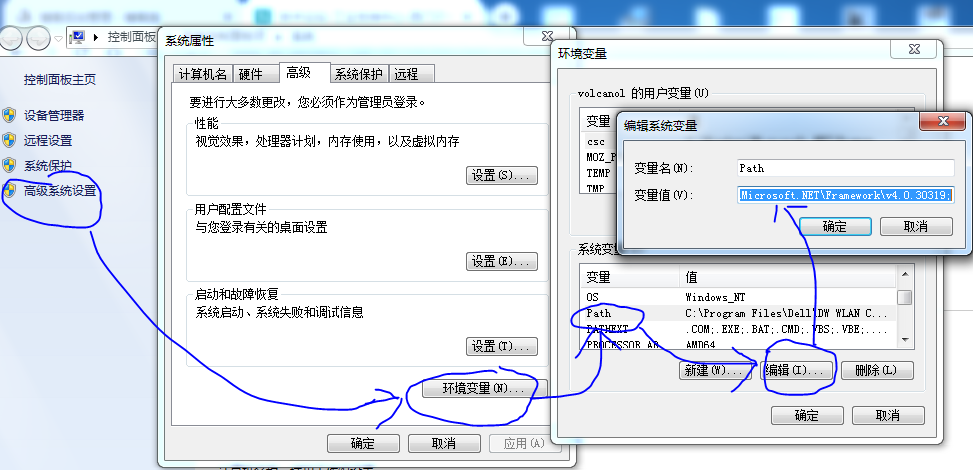
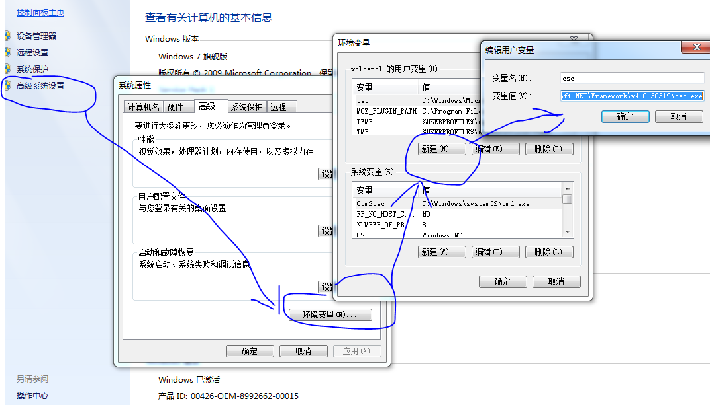
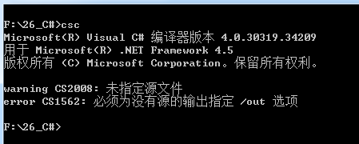
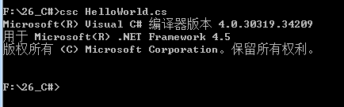
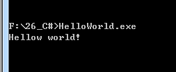

最近在做一个东西，需要用到通用开发语言开发一个软件来读取PLC的内容，这方面的难点在于解析PLC利用
以太网通讯的通讯协议，而一般的PLC厂商对自己的协议是封闭的，对一般的开发者是不开放的，虽然可以通过Wireshark
进行解析，但是工作量很大，且如果对Wireshark不熟悉基本也是无解，很难解析出来。
网上有部分用C#开发的开源库，但是自己对C#语言不懂，所以也就没法学习和应用了。因此我在这里开始了C#的
从零开始学习之旅(我的从零开始是指对C#一无所知，如果你要和我一起开启这趟旅程，应该懂基本的编程通识，这样应该
会更愉快一些)。
废话不多说，这个题头，就当引子吧，下面开始我们的C#之旅。后续文章不再做说上面的废话(简单的引子)了。
----------------------------------------------------------------我是分割线------------------------------------------------------------------------
1、学习参考书籍： C#本质论第4版
2、C#版本：V5.0
3、.NET Framwork 版本： v4.0.30319
4、操作系统版本：Windows 7 SP1 X64 CHS
5、编译器： csc.exe
6、代码编辑器： Editplus
7、命令行工具： cmd
8、推荐的轻量级Windows IDE： SharpDevelop
9、推荐跨平台轻量级IDE：Mono
---------------------------------------------------------------------------------------------------------------------------------------------------------
一、配置环境
Window7、Windows8、Windows10系统都自带.NET Framwork 版本。 而.NET Framwork 自带编译工具，这个
编译器就是 csc.exe.
其路径在： C:\Windows\Microsoft.NET\Framework64\v4.0.30319
如下图所示：

在 C:\Windows\Microsoft.NET\Framework64 路径有多个版本的.NETFramwork , 如下图所示：

确定好编译器后，我们就可以在命令行里面使用它，但是csc.exe不在系统的搜索路径，因此需要手动设置一下。
如下图所示：

将环境变量：PATH加上csc.exe的路径。即可在命令行快速访问csc.exe。
为了快捷的访问csc.exe 我们还可以加上一个环境变量。 csc, 设置如下所示：

这样就可以在命令行方便的访问csc.exe。 如下图所示：

二、编写代码
C#的代码可以利用任意文本编辑器编辑。最好是利用一个可以语法高亮的文本编辑器来编写代码。
第一个程序： HelloWorld.cs
using System;
class HelloWorld
{
static int Main(string[] args)
{
System.Console.WriteLine("Hellow world!");
System.Console.Read();
return 0;
}
}保存为： HelloWorld.cs
三 编译程序
如下图编译程序：

csc HelloWorld.cs 就可以编译程序，可以看到编译成功。
如果不指定输出文件名，则默认的输出程序将是： cs文件对应的文件名。
四、执行程序
程序的执行结果如下所示：

五、方便性脚本
每次都要进入到程序所在的工作目录很麻烦，有两种方法，一种是设置包含可执行文件路径的PATH环境变量
就和上面的设置一样。
另外一种是利用cmd脚本开启cmd命令行窗口，同时切换工作路径到可执行文件名所在的路径即可。
参考cmd脚本命令：
@echo off
cmd /k "start F:\26_C# && cd /D F:\26_C# && del *.bak && csc.exe HelloWorld.cs"或者第二种方式
@echo off
cmd /k "cd /D F:\26_C#"第二种方式只能打开命令行窗口，第一种方式还可以打开源代码所在的目录。
具体可以自己测试一下效果。
--------------------------------------------------------------分割线---------------------------------------------------------------
1、文章均为个人原创，欢迎转载，转载请保留出处：https://www.cnblogs.com/volcanol/
2、获取工控PLC、变频器、HMI、计算机、Windows、Linux、嵌入式资料点击：获取资料
3、如果您觉得文章对您有帮助可转至页面上半部分打赏，或移步：打赏
4、或者在页面右下角点推荐哟！！！
--------------------------------------------------------------分割线---------------------------------------------------------------